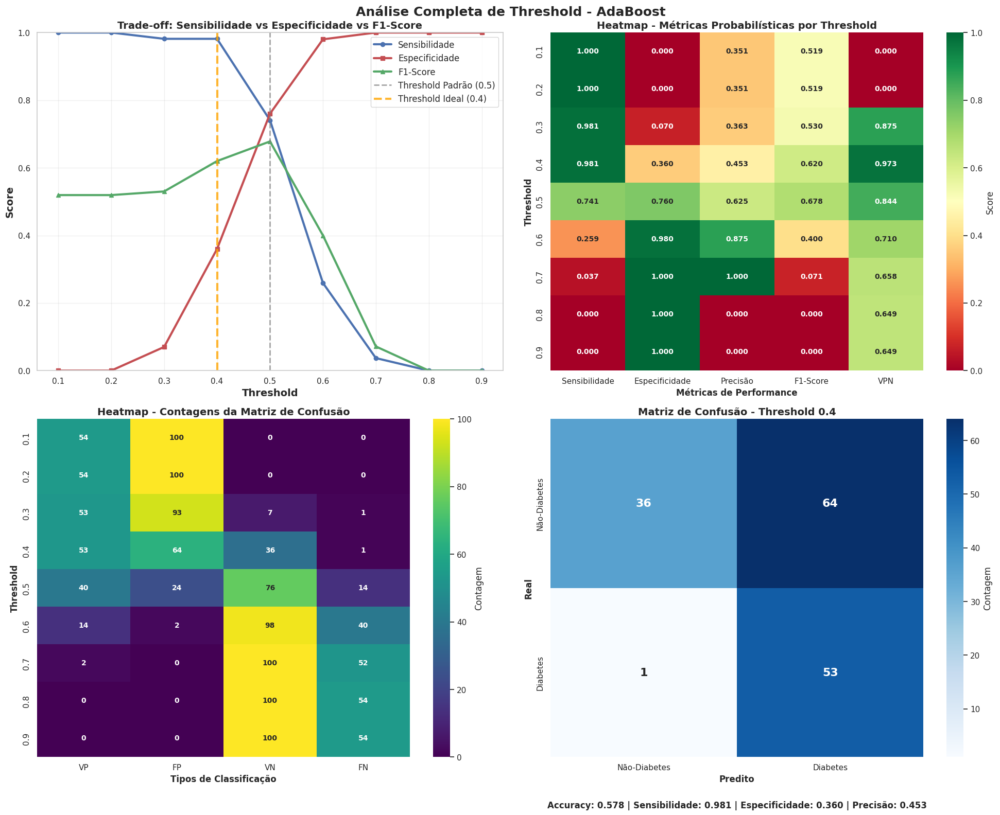

Fonte: elaborado pelo autor
💡 Clique na imagem para ativar o zoom; clique novamente para desativar.
•
Grid Search: busca exaustiva em espaço de parâmetros predefinido para encontrar a melhor combinação
•
Validação cruzada: técnica k-fold para avaliação robusta da performance dos modelos
•
Métricas de avaliação: múltiplas métricas para análise comparativa dos algoritmos